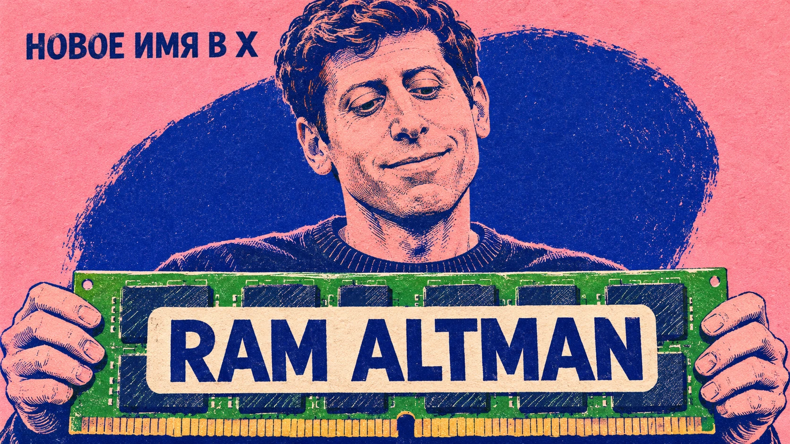

Все статьи
Полный архив опубликованных материалов ХПИИ в порядке выхода.
6 ноября 2026

Брокман признал: OpenAI отставала от Anthropic в борьбе за бизнес-клиентов
Громко сказаноГрег Брокман признал слабые позиции OpenAI относительно Anthropic на корпоративном рынке в первом полугодии 2026 года и заявил об ускорении роста в третьем квартале и партнёрстве с JPMorgan Chase.

Индия предупредила об ИИ-атаках на финансовые компании: снова ARTEX
Скайнет просыпаетсяCERT-In предупредил об активной кампании Crafty Falcon против финансовых организаций Индии. Атакующие используют ARTEX и другие ИИ-инструменты; виновные и финансовый ущерб кампании не установлены.

CrowdStrike выпустила «стоп-кран» для ИИ-агентов
Скайнет просыпаетсяCrowdStrike представила AI Kill Switch в Falcon Guardian — механизм экстренного прекращения доступа корпоративного ИИ-агента к модели через Gateway; остановка процессов на устройствах пока разрабатывается.

ИИ OpenAI нашёл 948 способов получить root в Linux
Скайнет просыпаетсяOpenAI сообщила об эксперименте с автономным поиском уязвимостей Linux: 948 уникальных проблем локального повышения привилегий и 1169 работающих эксплойтов в контролируемой среде.

Сэм Альтман стал Ram Altman после спора об оперативной памяти
Громко сказаноСэм Альтман временно сменил имя профиля в X на Ram Altman после критики его рассуждений о дефиците оперативной памяти и эффективности её использования в дата-центрах.
Взлом Binance на $6,34 млрд: хакеры использовали внутренний ИИ биржи
Скайнет просыпаетсяBinance рассказала, что при краже криптоактивов на $6,34 млрд злоумышленники использовали заражённые компьютеры разработчиков и внутренний ИИ-инструмент биржи. Детальная роль модели не раскрыта.

Skyfall показала ИИ, который разбирает автомобиль на детали по фотографии
Новости ИИSkyfall AI представила SKY-001 — модель, которая по изображению восстанавливает предполагаемую структуру механизма и шаги геометрического построения. Заявленные ускорение и экономия получены в тестах разработчика.
Макаки по $20 тысяч: фонд сооснователя Palantir вложил $20 млн в проект фермы
ИИ, ты чего творишь?Венчурный фонд 8VC вложил $20 млн в Safer Human Medicine, которая планирует разводить до 30 тыс. макак для исследований. Комплекс в Джорджии пока не построен; FDA развивает альтернативы испытаниям на животных.

Snowflake прописала ИИ-агентам правила: что считать выручкой и сколько тратить
Новости ИИSnowflake представила Business Ontology для единых определений корпоративных показателей и расширила Cortex AI Gateway для контроля ИИ-агентов, их прав и расходов.

OpenAI покупает Pierre: её инструменты уже работают в Codex
Новости ИИOpenAI объявила о намерении приобрести Pierre Computer Company, чьи библиотеки Trees и Diffs уже используются в Codex. После сделки компания планирует интеграцию Code Storage.
5 ноября 2026

MyHeritage выпустила ИИ-генеалога: он ищет предков и проверяет архивы
Новости ИИMyHeritage представила GAIA — ИИ-агента для поиска предков по историческим документам и архивам с проверяемыми источниками и ручным утверждением изменений в семейном дереве.

Джеффри Хинтон: ИИ может устроить «Чернобыль» уже в 2026–2027 годах
Громко сказаноНобелевский лауреат Джеффри Хинтон допустил крупный инцидент с участием ИИ в 2026–2027 годах и призвал к независимым проверкам мощных моделей до выпуска.

OpenAI выпустила Images 2.6: ChatGPT теперь делает ГИФКИ!
Новости ИИOpenAI выпустила Images 2.6: ChatGPT получил создание GIF и более точное редактирование изображений, а API — варианты Flare и Sunburst.

ИИ поручили исправить 100 уязвимостей. Лучший результат — 67,8%
Новости ИИCollinear AI открыла CWE-bench v2: 100 заданий на исправление реальных программных уязвимостей. Gemini 4 Argon получила 67,8% успешных запусков, а пять заданий не решила ни одна из 11 моделей.

ИИ-агенты могут стать неотключаемыми
Скайнет просыпаетсяCNAS исследовал возможность появления ИИ-агентов, самостоятельно обеспечивающих себе средства, серверы и новые копии. Доклад описывает угрозы утраты контроля и меры защиты.
4 ноября 2026

3 ноября 2026

OpenAI, Google, Microsoft и Anthropic разрешат сайтам запрещать обучение ИИ
Новости ИИOpenAI, Google, Microsoft и Anthropic договорились поддерживать единый способ отказа от использования материалов сайтов для обучения нейросетей. Владельцам сайтов больше не придётся составлять отдельные запреты для каждой из этих компаний, когда все они внедрят новый механизм.

Codex так разогнал разработку, что OpenAI пришлось создавать новый Git-сервер
Новости ИИПрограммисты OpenAI стали настолько активно использовать Codex, что прежняя инфраструктура хранения исходного кода начала захлёбываться от нагрузки. Отправка изменений замедлялась, возникали ошибки при объединении кода, а надёжность системы временами падала ниже 90%. 2 ноября OpenAI рассказала о

За взлом ChatGPT теперь платят до $172 тысяч!
Новости ИИOpenAI с 2 ноября существенно увеличила вознаграждения исследователям, которые находят уязвимости в ChatGPT, Codex и API. За критическую ошибку безопасности в одном из основных продуктов компания теперь готова заплатить до $30 тысяч. За исключительную находку базовая награда

Grok Bot взял на себя около 70 часов работы аналитиков за неделю
Новости ИИВнутренний ИИ-агент Data Bot за неделю выполнил задачи, на которые команда аналитиков SpaceXSI потратила бы примерно 70 часов. Эту оценку компания опубликовала 2 ноября в блоге xAI. Data Bot работает на платформе Grok Bot и подключается к корпоративному хранилищу данных.